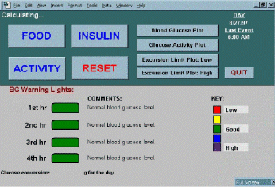

ORTAG
ORTAG will introduce a new paradigm for analyzing metabolic processes. It specifically aims to facilitate blood glucose level control for everyday health and wellness, as well as to improve the treatment outcomes for medical conditions such as obesity and diabetes.
This suite of software modules uses personalization and the duality between input dynamics and system structure to predict how food or activity will affect blood glucose (and insulin, weight gain/loss, or energy) over time. One of the expert software modules provides blood glucose time course simulators for helping medical practitioners prescribe the insulin regimen in diabetes.
The ORTAG image below is the Patient Interface Screen for our predictive software for contemporaneous metabolic control in diabetes. The ORTAG are software agents within our Web-Based, Individual-Specific Interactive Health Management system. Basically, we fine-tune an individual-specific metabolic model while taking into account the input dynamics: When it has converged sufficiently, we can generate real time predictions usable for proactive, preventative control. This Company appears to be the first to implement a practical solution to this problem. Our patented technology uses the duality between the input dynamics and the actual system structure - a defining characteristic of a certain class of stable feed-forward systems.

Examples
A related example of the technology's wide applicability: Think about a child, insulin-dependent since age 4, who is now 11. Let us now think about the ideal case when the family is very in-tune with the need for control, the health insurance allows for intensive management, the child is very compliant and uses the finger-stick blood glucose tester as much as seven times a day, and is seen by an endocrinologist regularly. And yet, this one blood test, considered to be the gold standard indicator of good control, keeps creeping up. Then the bad news: there is kidney damage, despite all routine measurements evidencing good control. Nobody knows why, but here is a possible explanation the patient and medical practitioners simply had no access to:
Every morning for all these years, the child woke up with good blood glucose levels, got the prescribed insulin injections, ate a bowl of cereal with milk, and went to school. When back from school around 4PM, and measured the blood glucose concentration, the measurement was again good. What nobody knew is that this child's blood glucose had been over three or four times higher than the physician-prescribed limit, each and every school day, for years... There is no way to tell for sure, but this repeated stress situation is the most likely cause of the kidney damage. So why is it that nobody knew this was happening? The answer is simple: a breakfast rich in refined carbohydrates converts most of its nutritional content into blood glucose within one hour, but the before-breakfast insulin injection is inherently too slow to remove the glucose from the blood stream. By 4PM the insulin "caught up" with the excess blood glucose, the evidence is gone, but the damage was already done, and more damage followed the next day. Could we have prevented the situation by additional testing? Yes, but only if we knew when to do the additional testing.
© 2016 LivProactiv, Inc.